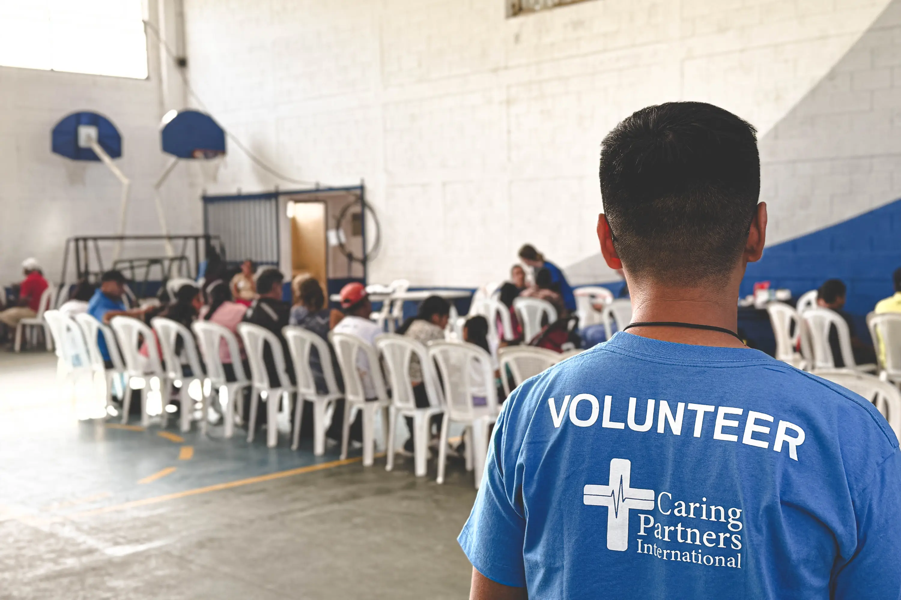
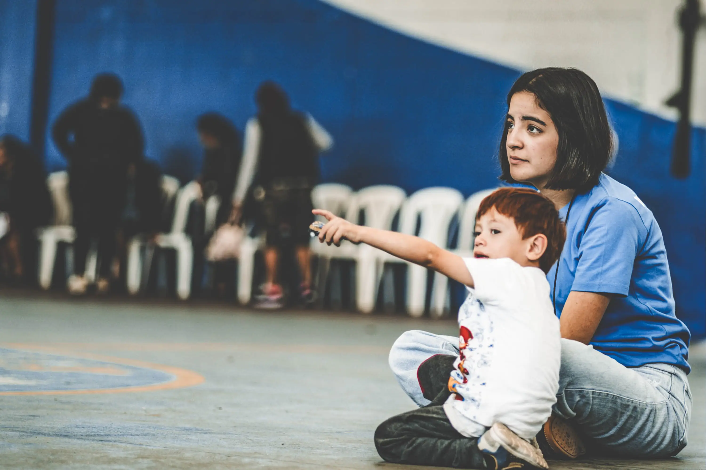
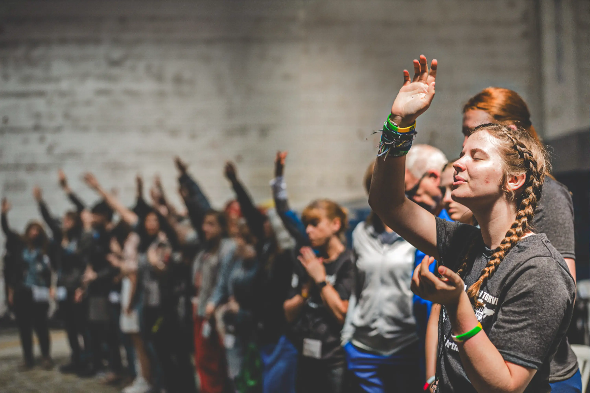

Evangelism Through Medicine®
Delivering compassionate healthcare and the Gospel of Jesus Christ to those in need around the world.
Partnering with local churches to bring hope and healing.


Your Gift Today Delivers Hope and Healing
Every dollar makes a difference for eternity.
96% of all cash and product donations directly support ministry programs.
Donate Now

Serving the Lord in Guatemala
May was a busy month for CPI’s healthcare ministry in Guatemala, with two volunteer medical teams serving one led by Rick & Jenny Lalli alongside National Directors Helmuth & Olga Marroquin.
Learn More
